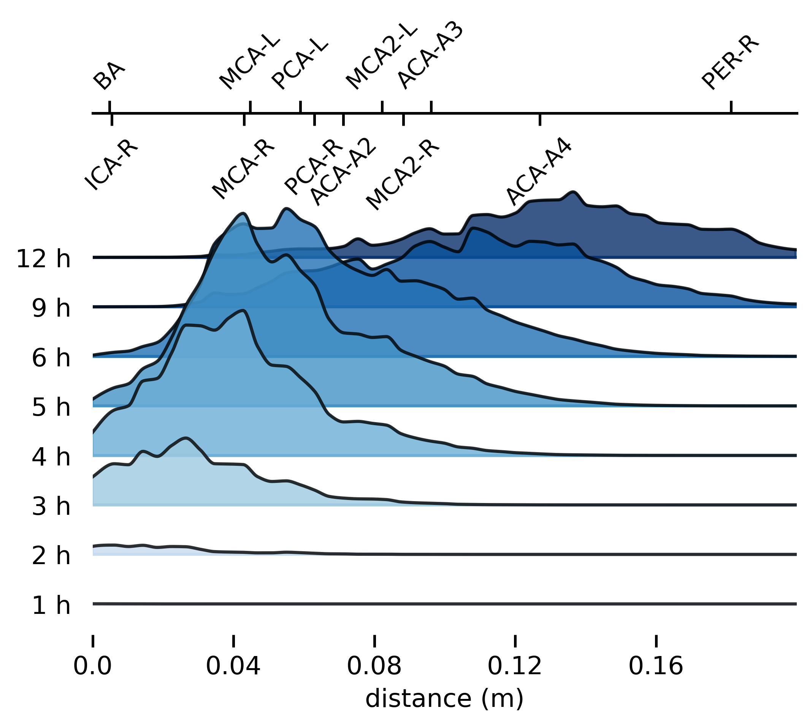

baseline
high PVS flow
A
B
C
D
E
F
G
H
high PVS flow
high PVS dispersion
baseline
baseline
high PVS flow
high PVS flow
baseline
high PVS flow
baseline
MCA-R
MCA2-R
total PVS tracer content
artery
PVS
CSF
pia